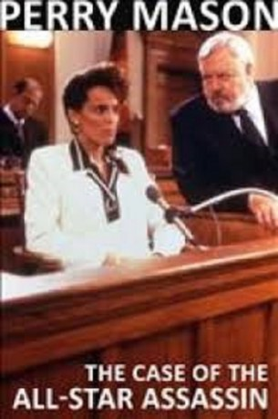

#6647 Perry Mason: Geld - Sport - Mord
Alternativ: Perry Mason: The Case of the All-Star Assassin
 
 IMDB-Wertung: 6.6 / 10
IMDB-Wertung: 6.6 / 10  Metascore: 0
Metascore: 0 
Rechtsanwalt Malansky (William R. Moses) verteidigt den Sportler Robert Spencer (Jason Beghe), der unter Mordverdacht steht. Als Malansky merkt, daß der Fall doch komplizierter ist, bittet er seinen Kollegen Perry Mason (Raymond Burr) um Hilfe. Unerwartete Hilfe bekommt Mason von Malanskys Ehefrau Amy (Alexandra Paul). Sie bringt Mason auf die Spur eines Killers, der von einem Sportstar beauftragt wurde. Doch nun gerät Amy selbst in allergrößte Gefahr.
Jahr: 1989
Dauer: 90 Minuten
FSK:
Land: USA Studio: NBCTonspuren: DD5.1 - ,
Untertitel:
Auflösung: 1080p (1440x1080) Größe: 4208 MB
Genre: Drama, Krimi, Mystery
Regisseur: Christian I. Nyby II
Drehbuch: Dean Hargrove
Soundtrack:
Darsteller:
Datei: X:\Person\Perry Mason\Perry Mason Geld - Sport - Mord (1989, FSK, 1440x1080).mkv seit 28.07.2017
Festplatte: HD Collection-7+mehr(A-Z)+Person
 Es gibt insgesamt 20 Filme in der Gruppe 'Person\Perry Mason'
Es gibt insgesamt 20 Filme in der Gruppe 'Person\Perry Mason'